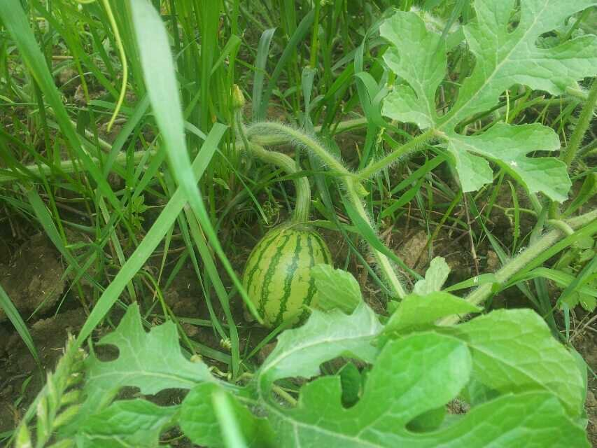
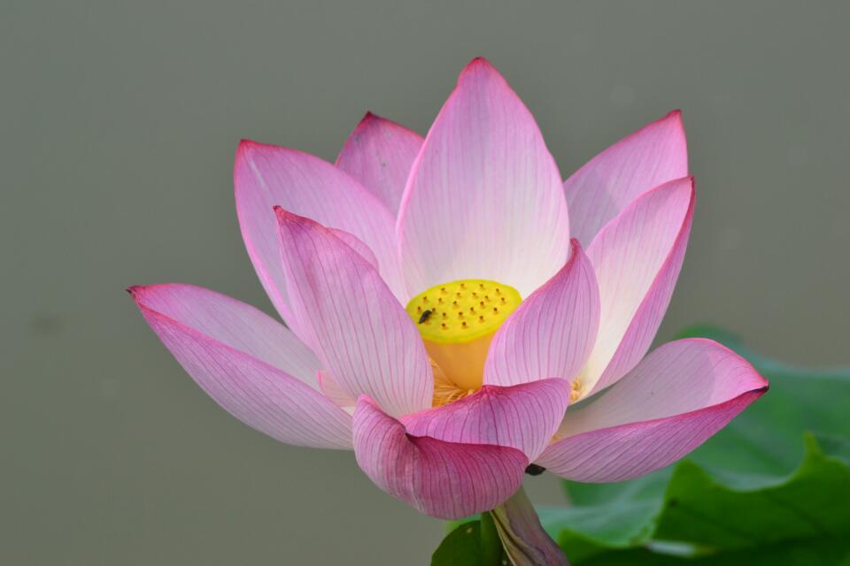
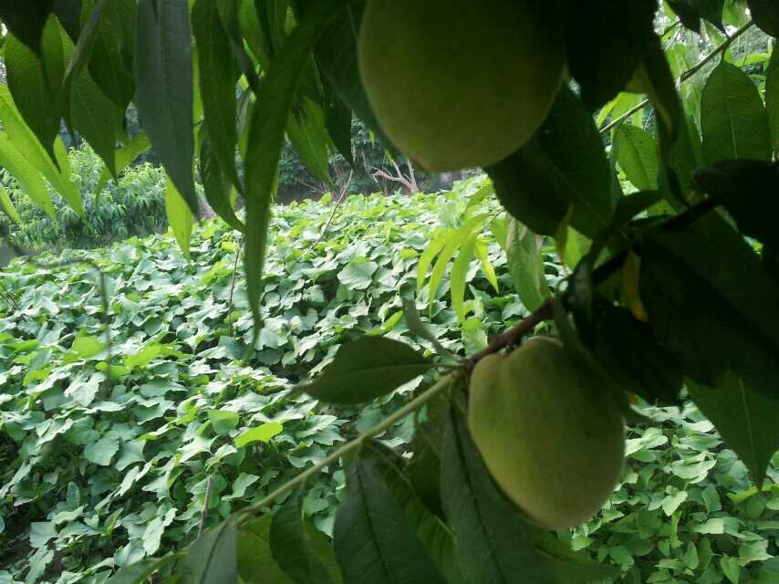
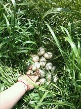
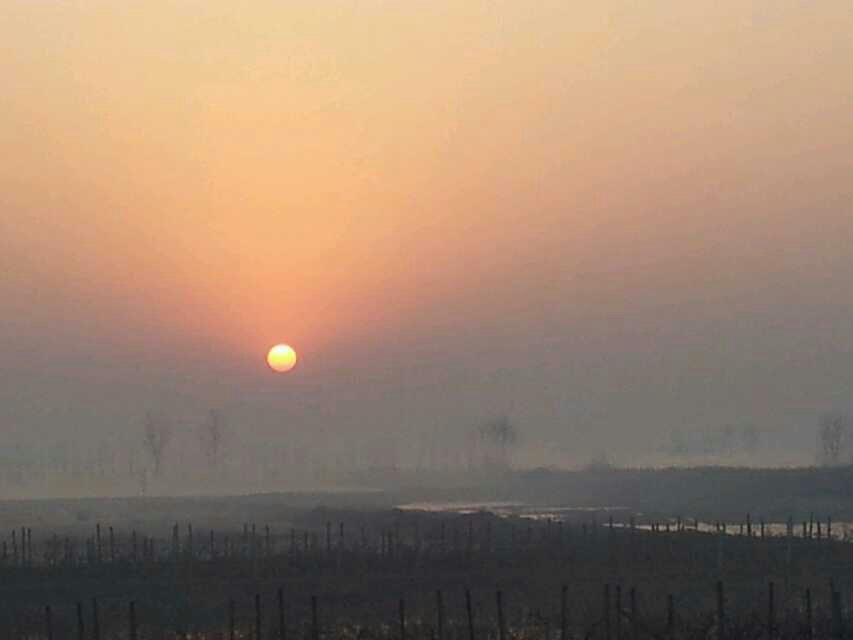
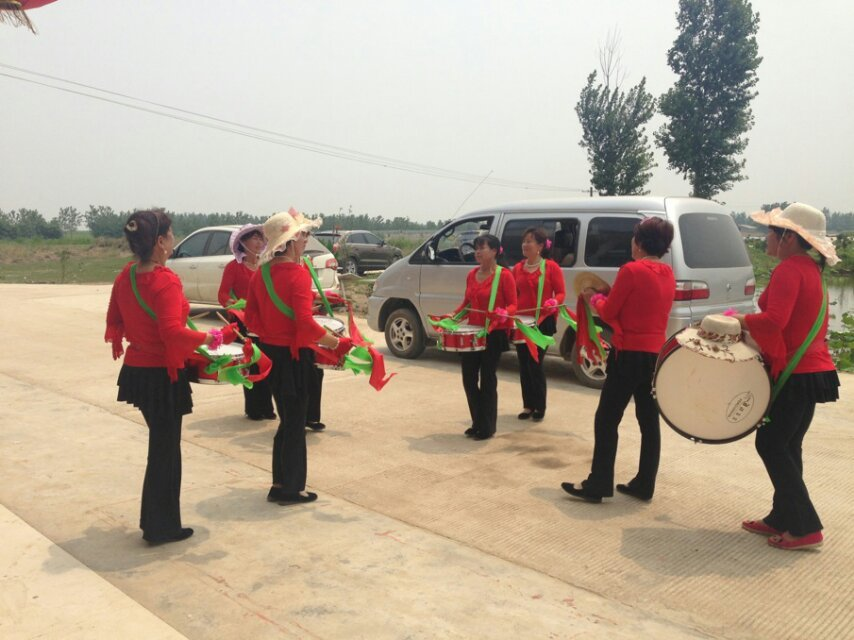
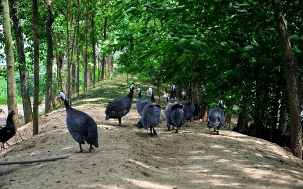
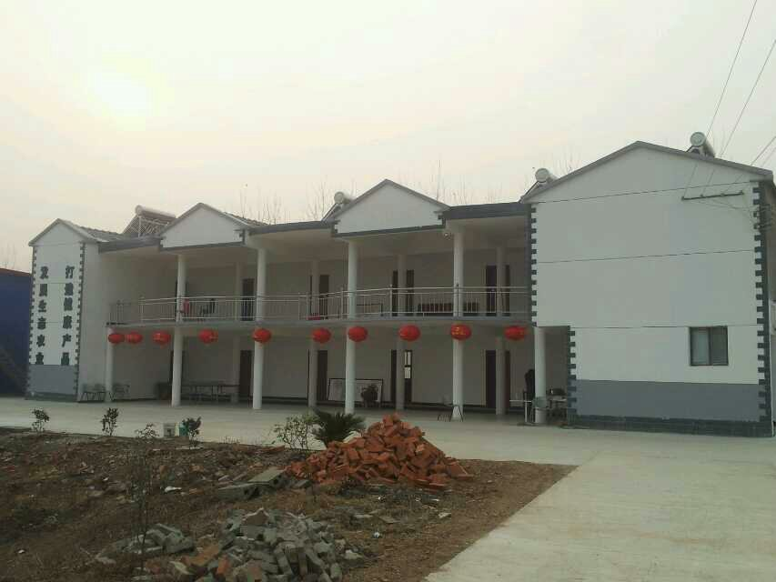
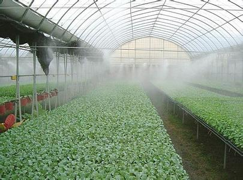
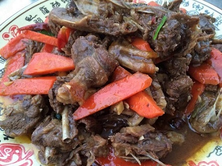

武汉农圣沉湖生态农庄
武汉农圣沉湖生态农庄位于蔡甸区消泗乡，与国家级保护区沉湖湿地相邻，空气清新，环境优美，0污染！
农圣沉湖生态农庄风景展示
武汉农圣沉湖位于蔡甸区消泗乡，与国家级保护区沉湖湿地相邻，空气清新，环境优美，0污染！










返回
武汉农圣沉湖生态农庄位于蔡甸区消泗乡，与国家级保护区沉湖湿地相邻，空气清新，环境优美，0污染！
武汉农圣沉湖位于蔡甸区消泗乡，与国家级保护区沉湖湿地相邻，空气清新，环境优美，0污染！